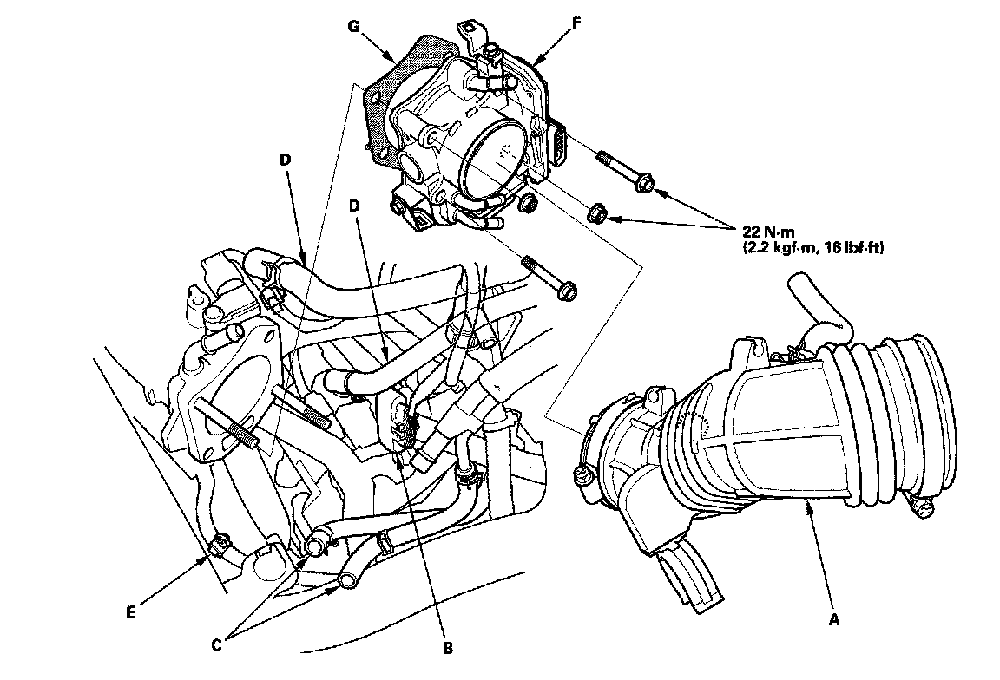

Removal and Replacement
Throttle Body Removal/InstallationCAUTION: Do not insert your fingers into the installed throttle body when you turn the ignition switch ON (II) or while the ignition switch is ON (II). If you do, there will be serious injury to your fingers if the throttle valve is activated.
NOTE: If you are replacing or cleaning the throttle body, start at step 1. If you are removing the throttle body, start at step 4.
1. Connect the HDS to the DLC while the engine is stopped.
2. USA, Canada models: Select the INSPECTION MENU on the HDS.
3. USA, Canada models: Do the TP POSITION CHECK in the ETCS TEST.

4. Remove the air intake duct (A).
5. Disconnect the throttle body connector (B).
6. Disconnect the water bypass hoses (C), and plug them.
7. Disconnect the vacuum hoses (D) and the clamp (E).
8. Remove the throttle body (F).
9. Install the parts in the reverse order of removal with a new gasket (G), then do this:
- Do the ECM idle learn procedure.
- Refill the radiator with engine coolant.